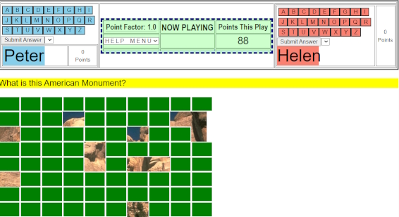
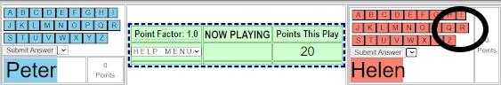
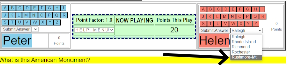
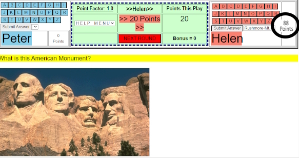

Game Type I asks a question while slowly revealing an image, music, text or other items that lead to the answer.
Example 1:Identify the National Monument or Famous Person while slowly reveling an image.
Example 2:Identify the composer or song while incrementally playing more notes.
IMPORTANT: While reviewing the challenge, each player must keep their hands off the mouse.
Above each player's name are buttons displaying the letters from A-Z.
1) At any time, a player may say "I got it!", grab the mouse and press the first letter of the possible answer.
2) At which time a drop-down menu will list all the possible answers that start with that letter.
3) The player then selects a answer.
If correct he/she receives the displayed Point Award, if not, the opposing player receives a lessor Point Award, and the game continues.
[Things you don't need to know to play, but included if you are interested]
While the image, music or other items are being incrementally displayed, the Point Award is incrementally decreasing.
The lessor point award is decided by the Game Master who assembled the Rounds for the Set. The default is 25%.
If the player can't find the answer in the drop-down menu, he/she can't then select another button.
The players has a limited amount of time to select an answer, once the letter button is pressed.

The above image shows Game type I after 12 seconds showing parts of an image that answers the question: What is this American Monument?

In the above image, Helen thinks she knows the answer and is about to press the "R" button.

In the above image, Helen has pressed the "R" button and a drop-down menu with several possible names on it, including Rushmore-Mt, which she selects.

In the above image, Helen had correctly answered the question and received 88 points.